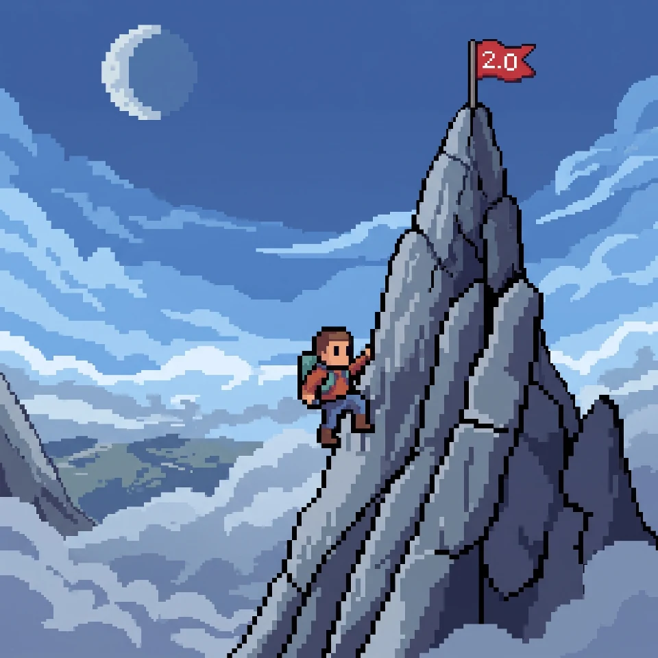

Skapa ett konto eller logga in. Dina ord och framsteg sparas därefter säkert i Supabase.
Inloggad som · Synkroniserat
Redo för dagens klättring?
Varje nytt ord tar dig ett steg närmare ditt drömresultat. Du har redan kommit en bit – fortsätt uppåt!

🎯 Dagens uppdrag
PågårSmå steg gör stor skillnad. Kör vi?
🏔️ Din expedition
BaslägerDu samlar höjdmeter, ett ord i taget.
Vad vill du göra nu?
Välj ditt nästa äventyr.
🏅 Dina utmärkelser
Varje milstolpe är värd att fira.
Ord vars definition avslöjar själva ordet pausas från flervalsfrågor tills förklaringen förbättrats. Inga definitioner eller träningsresultat raderas.
Vänd kortet för att se definitionen. Klicka en gång till på det vända kortet för att registrera ett fel och schemalägga repetition. Du kan också välja bland svarsalternativen. Efter sex rätt i rad blir ordet bemästrat och tas bort från normal repetition. ”Kan redan ordet” räknas direkt som bemästrat och tas bort från normal träning.
Du är klar med den här omgången! 🎉
Byt träningsläge eller kom tillbaka när fler ord är redo för repetition.
Ordkälla: nya definitioner från Språkbanken / LEXIN (CC BY 4.0). Tidigare ord och definitioner har behållits för att skydda dina framsteg. Ordlistan är ett övningsurval och inte en officiell ordlista från UHR.
Hantera ord du kan och har bemästrat
Här kan du återaktivera ord du redan kan eller har bemästrat. Dina framsteg sparas automatiskt på ditt konto.
20 ord. 6 minuter. Ett försök.
Träna under tidspress som på ett prov: fem svarsalternativ, ett svar per ord och inga ledtrådar. Du måste besvara frågan innan du kan gå vidare. Facit och poäng visas först när provet är slut.
Detta är ett övningsprov med ord ur Ordtoppen, inte ett officiellt högskoleprov. Dina ords repetitionsstatus påverkas inte.
Vilket svar beskriver ordet bäst?
Inga definitioner eller rätta svar visas under provet. Timern fortsätter tills tiden tar slut eller alla 20 svar lämnats.
Ditt resultat
Detta provresultat påverkar inte dina bemästrade ord eller repetitionsintervall.